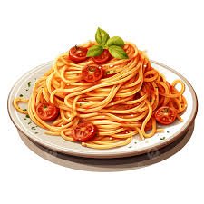

Spaghetti Recipe
Home

long, thin Spaghetti pasta tossed in a savory tomato-based meat or herb sauce, finished with grated cheese.
Ingredients needed
- dried spaghetti noodles 12 oz (340 g)
- ground beef 1 lb (450 g)
- 1 can (28 oz / 800 g) crushed tomatoes (or two 14.5 oz / 410 g cans diced tomatoes)
- Italian aromatics and herbs
Steps to make Spaghetti
- Bring a large pot of salted water to a boil. Add the dried spaghetti and cook until al dente according to the package directions. Reserve about ½ cup of the pasta water, then drain.
- While the pasta cooks, heat a large skillet over medium-high heat. Add the ground beef and cook until browned, breaking it into small pieces. Drain excess fat if needed.
- Add your Italian aromatics (such as onion and garlic) to the skillet with the beef. Cook for 2–4 minutes until softened and fragrant.
- Stir in the canned tomatoes and the Italian herbs (such as oregano, basil, thyme, or an Italian seasoning blend). Simmer for 10–15 minutes, stirring occasionally, until the sauce thickens. Season with salt and black pepper to taste.
- Add the drained spaghetti to the skillet and toss until evenly coated. If the sauce is too thick, stir in a little of the reserved pasta water.
- Divide the spaghetti among plates and serve hot. If you have grated Parmesan or fresh basil, sprinkle them on top for extra flavor.